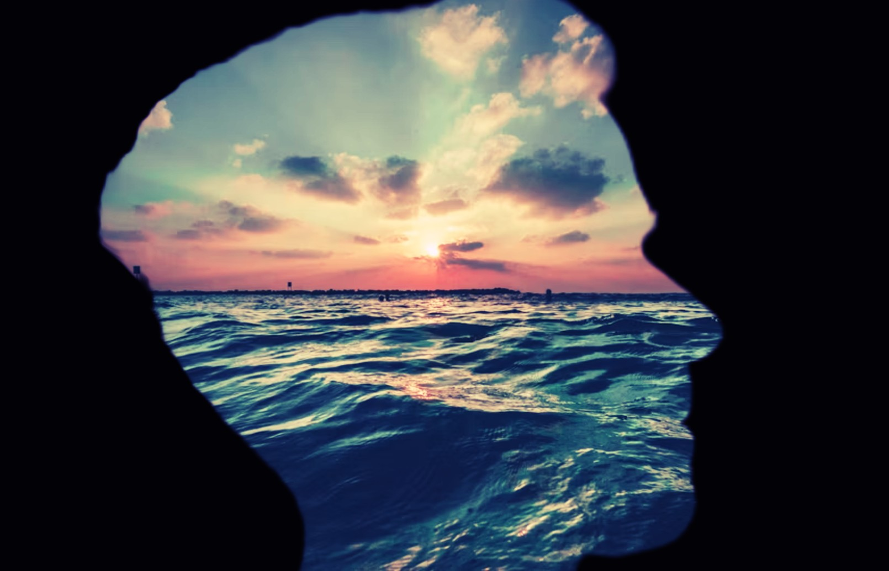

The Ocean Behind His Eyes
The Ocean Behind His Eyes is a poem about emotional walls, hidden vulnerability, and the ache of loving someone who keeps their deepest feelings locked away.
The ocean becomes a metaphor for a person who appears calm and distant on the surface while carrying an immense, unseen world within. The speaker does not ask him to reveal everything or to abandon the defenses he built to survive. She simply wants to stand beside him—to enter the deep without demanding that he drown.
At its heart, the poem is about the painful realization that love can offer a safe shore, yet still be unable to cross the distance someone has created within themselves.
Sometimes, the deepest love is not about breaking someone's walls. It is about standing at the shore, letting them know you are there, and accepting that they may never let you enter.
🎵 "sad solo flute music 575527 - Poorartistt (Pixabay Music)
